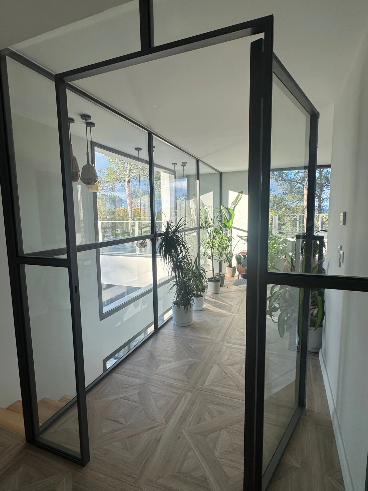
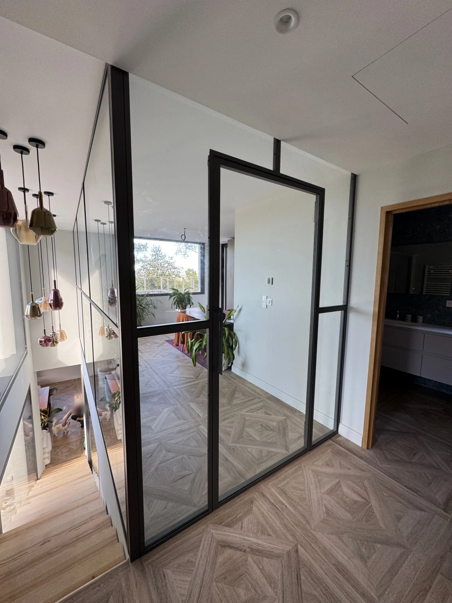
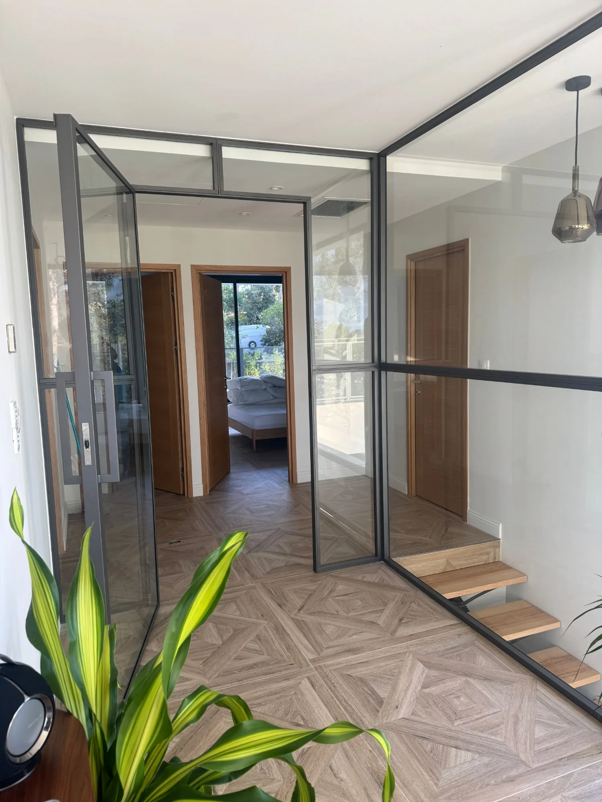

Baies vitrées sur les pins, double hauteur au-dessus de l'escalier, sol à motif Versailles : cette villa d'architecte de Montferrier-sur-Lez est pensée pour la lumière. À l'étage, en haut de l'escalier, les propriétaires souhaitaient faire de l'espace ouvert sur les fenêtres un véritable bureau, au calme et isolé du palier, sans perdre la transparence qui fait le caractère de la maison. Une cloison maçonnée aurait coupé l'étage en deux ; FMG Metal Studio a proposé une verrière intérieure sur mesure, réalisée avec les profilés acier de notre collection Pleine Lumière®.
Séparer sans cloisonner
Le cahier des charges tenait en une idée : un bureau fermé, mais qui ne se voit presque pas. Plusieurs exigences en découlaient :
- Préserver la lumière naturelle : le jour des grandes baies du bureau devait continuer de traverser jusqu'au palier et à la cage d'escalier.
- Garder les vues : depuis le haut de l'escalier, le regard file à travers le bureau jusqu'aux pins du jardin.
- Isoler l'espace de travail : une porte qui ferme vraiment le bureau, pour travailler au calme, à l'écart des allées et venues.
- S'accorder à l'architecture : des lignes fines et une teinte sombre, en écho aux menuiseries extérieures de la villa.
Une verrière en L, au plus près de l'architecture
La verrière se compose de deux faces. En façade, face à l'arrivée de l'escalier, la porte est encadrée de deux châssis fixes recoupés d'une traverse, et des impostes vitrées prolongent l'ouvrage jusqu'au plafond. En retour, une grande paroi vitrée longe la trémie de l'escalier sur toute la profondeur du bureau : depuis les marches, on voit la pièce et les fenêtres, et les suspensions qui descendent dans la double hauteur se reflètent dans le verre. Un raidisseur discret, fixé au plafond, reprend la façade au droit de la porte et garantit la stabilité de l'ensemble.


Des profilés ultra-fins JANSEN pour de grands vitrages
Tout le parti pris repose sur la finesse des profilés. Nous avons retenu les profilés acier JANSEN, ceux de notre collection Pleine Lumière® : leur section réduite laisse la plus grande place au verre, tandis que la rigidité de l'acier permet de tenir des vitrages de très grandes dimensions. Résultat : peu de montants, peu de traverses, et des vitrages qui occupent presque toute la surface de la verrière.
Le retour le long de l'escalier est ainsi découpé en quelques grands volumes de verre seulement, plutôt qu'en une multitude de petits carreaux. Le dessin reste graphique, à la manière des verrières d'atelier, mais beaucoup plus aérien. L'étage garde sa profondeur et sa luminosité, et l'ouvrage se fait oublier au profit de la vue.
Une porte entièrement vitrée
Pièce maîtresse de l'ouvrage, la porte est entièrement vitrée : un seul vitrage sur toute sa hauteur, sans traverse intermédiaire, tenu par un cadre acier JANSEN aussi fin que celui des châssis fixes. Ouverte, elle dégage un large passage vers le bureau ; fermée, elle s'inscrit dans le rythme de la verrière sans rompre la transparence. Une poignée bâton verticale et une serrure à cylindre complètent l'équipement, pour un usage quotidien et la possibilité de fermer le bureau à clé.
Réaliser un ouvrant vitré de cette hauteur demande une fabrication précise : équerrage du cadre, réglage des organes de rotation et jeux réguliers sont ce qui garantit une porte qui se manœuvre en douceur et reste d'aplomb dans le temps.

Un aménagement intérieur haut de gamme
Vue depuis le bureau, la verrière cadre le palier, les portes en bois des chambres et l'escalier aux marches suspendues ; vue depuis le palier, elle met en scène le bureau, ses plantes et ses fenêtres ouvertes sur le paysage. Plus qu'une simple séparation, elle structure l'étage et en fait une pièce à part entière de l'architecture de la maison.
- Ouvrage
- Verrière intérieure sur mesure avec porte vitrée
- Profilés
- Acier ultra-fins JANSEN, collection Pleine Lumière®
- Porte
- Entièrement vitrée, un seul vitrage toute hauteur
- Composition
- Façade avec porte et fixes, impostes, retour le long de l'escalier
- Équipement
- Poignée bâton, serrure à cylindre
- Projet
- Espace bureau, villa d'architecte
- Lieu
- Montferrier-sur-Lez, Hérault (34)
Verrières et cloisons vitrées sur mesure
Bureau, cuisine, chambre ou palier : chaque verrière que nous réalisons est dessinée pour un lieu précis, à partir de relevés sur place, puis fabriquée dans notre atelier du Gard. Autour de Montpellier, de Nîmes et au-delà, nous accompagnons particuliers et architectes dans leurs projets de menuiserie acier intérieure.
Vous avez un projet de verrière ou de porte vitrée ? Découvrez la collection Pleine Lumière®, nos réalisations, ou parlons de votre projet.